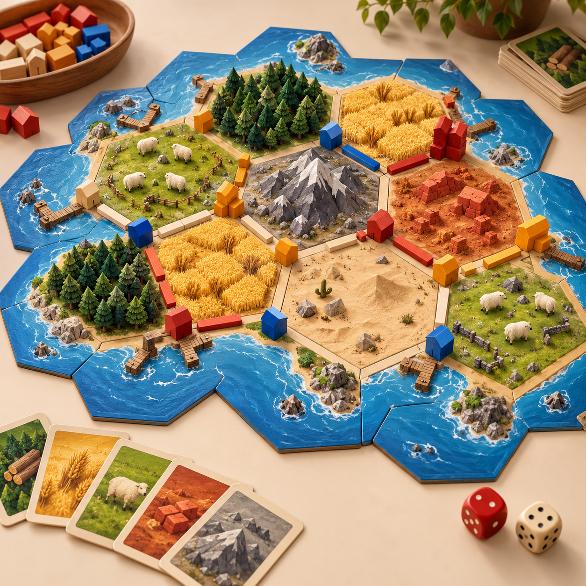
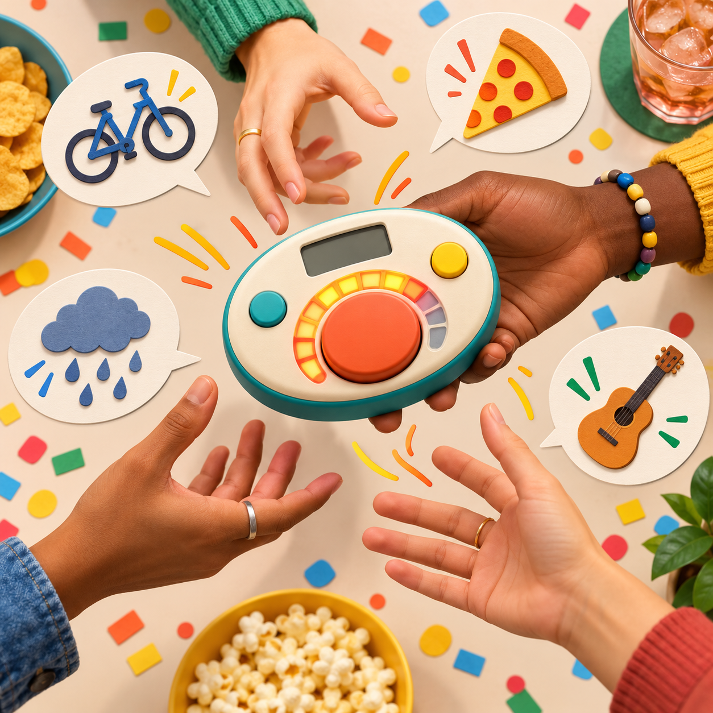
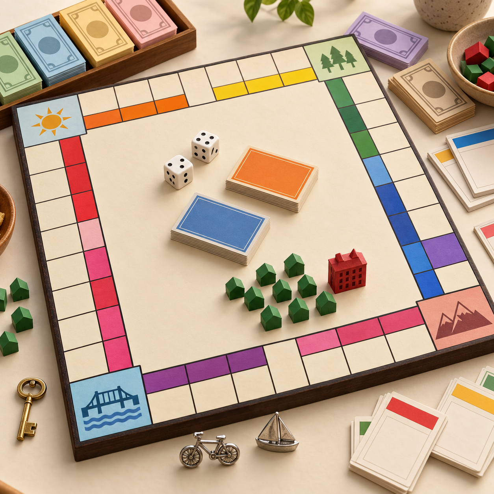
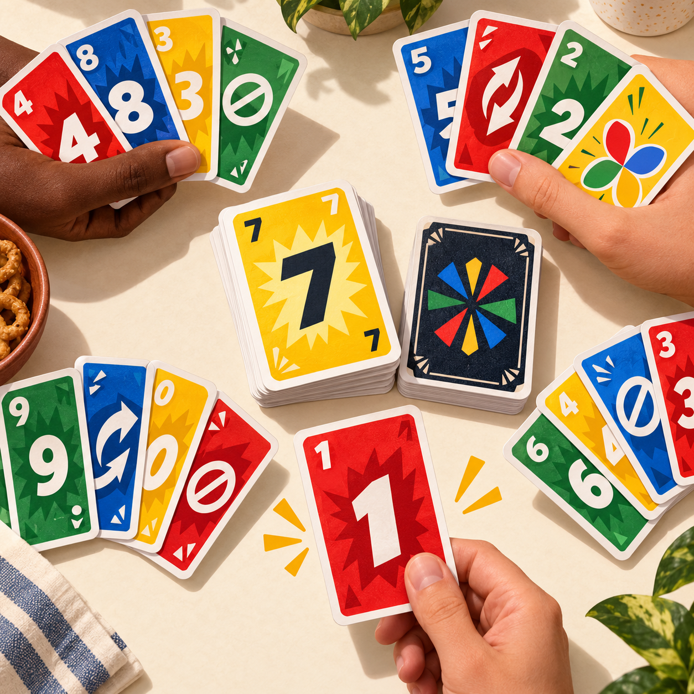
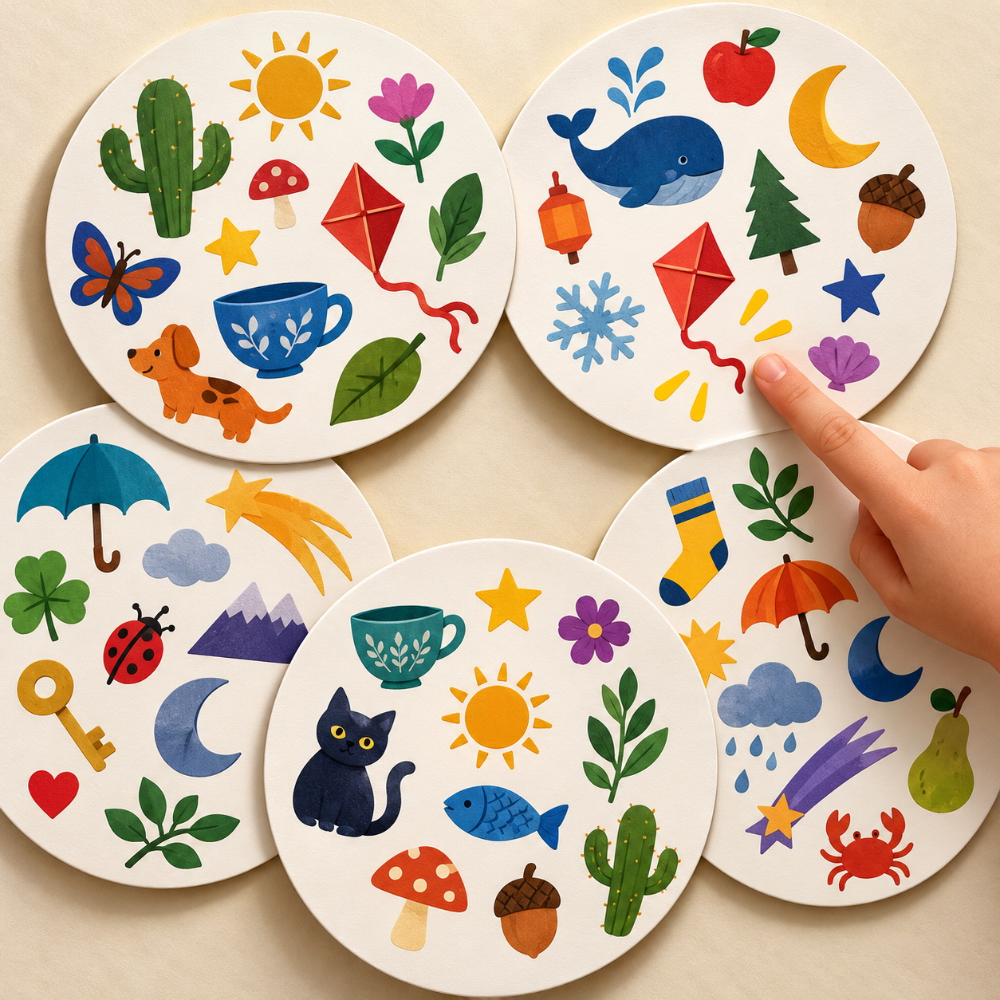
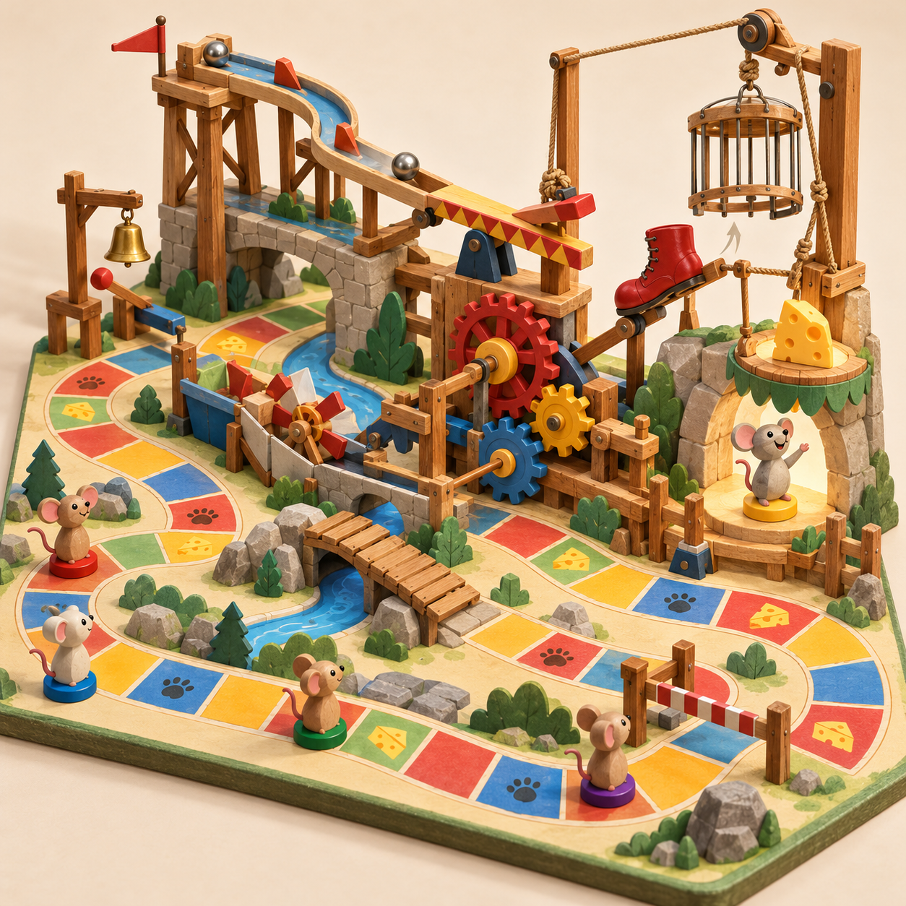

Favorite Party Games
A brief list of my top 6 favorite simple party games!

#1 - Catan
My absolute favorite board game. Catan is a strategy game where you collect resources, trade between players, and build roads and settlements to gain points. The first player to 10 points wins!

#2 - Catchphrase
Great for a good laugh, best with a group! Catchphrase is a word-guessing game. Describe the word on the game pad without saying it, then pass it on before the buzzer goes off!

#3 - Monopoly
A good time if you have patience and a whole weekend. Monopoly is a classic property party game. Buy, trade, and build on properties while collecting rent in an attempt to bankrupt the other players.

#4 - Uno
Quick games, and can be replayed many times without getting too old, too quick! Uno is a fast card game where you match colors or numbers to empty your hand first. Don't forget to call "Uno!" when you have one card left!

#5 - Spot It
My girlfriends and my favorite game to play when we're at a restaarant or bar. Spot it is a quick matching game where every pair of cards shares exactly one symbol. The first to spot and name it wins the card!

#6 - Mousetrap
One of my favorite nostalgic games. Mousetrap is a board game where you actually build a working mouse-trap in an attempt to trap other players trying to gather pieces of cheese.